전파되는 중간에,
장을 찍습니다.
Forward DFT 장을 위상 재생하는 중간에 설계 영역을 촬영합니다. 원래 장은 계속 전파되고, 찍힌 한 장만 정지 이미지로 저장됩니다.
전파는 복소 DFT에서 재구성한 정상상태 위상 순환입니다. DFT는 시간에 걸쳐 누적한 복소 주파수장이며, 사진기는 그 결과를 저장하는 비유입니다.
다음은 목표에서 출발합니다SCROLL TO UNDERSTAND
Forward DFT 장을 위상 재생하는 중간에 설계 영역을 촬영합니다. 원래 장은 계속 전파되고, 찍힌 한 장만 정지 이미지로 저장됩니다.
전파는 복소 DFT에서 재구성한 정상상태 위상 순환입니다. DFT는 시간에 걸쳐 누적한 복소 주파수장이며, 사진기는 그 결과를 저장하는 비유입니다.
다음은 목표에서 출발합니다같은 구조에서 위쪽 출력의 adjoint source를 켭니다. 설계 영역을 다시 촬영해 두 번째 DFT 장을 저장합니다.
목적함수가 정하는 별도의 계산입니다. 원래의 입력 광원은 OFF. 두 이미지는 같은 설계 영역의 같은 주파수를 봅니다.
저장한 두 장을 모읍니다저장한 forward·adjoint 복소장을 픽셀마다 겹쳐 후처리합니다. 어느 픽셀의 밀도를 바꾸면 출력이 좋아질지 gradient로 읽습니다.
화면의 실수부 이미지를 단순히 더하거나 곱하는 계산은 아닙니다. 복소장·정규화·설계 변수의 미분을 반영한 현재 구조에서 계산한 실제 gradient입니다.
민감도를 설계로 돌려보냅니다Gradient를 받은 최적화기가 설계 영역의 밀도를 바꿉니다. 연결된 두 waveguide port는 고정된 채, 사각형 안만 갱신됩니다.
해상도 60, 설계 변수 61×61로 다시 계산했습니다. 저장한 각 갱신에서 출력이 증가한 밀도를 다음 forward·adjoint 계산에 그대로 사용합니다. 선택기로 실제 반복 기록을 비교할 수 있습니다. 아직 회색 밀도인 초기 단계입니다.
반복 계산과 갱신 기록촬영 → 복소장 겹침·후처리 → gradient → 설계 갱신. 표시한 실수부 두 장만으로 gradient를 계산할 수는 없습니다. 같은 forward·adjoint 실행에서 얻은 복소장과 Meep의 미분을 사용했습니다. 각 갱신 뒤 새 구조로 forward·adjoint·gradient를 다시 계산한 유한한 기록입니다. 마지막 기록에서 멈추며, 수렴한 최종 구조를 뜻하지 않습니다. J는 정규화하지 않은 목적함수이며 효율(%)이 아닙니다.
EXPLORE THE EXAMPLES
질문 → 물리 → 설계도 → 코드 → 검증
구조도에서 파란색은 유전체, 금색은 광원입니다. 2D 예제의 두께와 화살표는 이해를 위한 표현입니다.
Optical beams 카드의 밝은 무늬는 실제 Meep 순간 전기장의 제곱입니다.
15개의 예제 · 질문에서 시작해 보세요
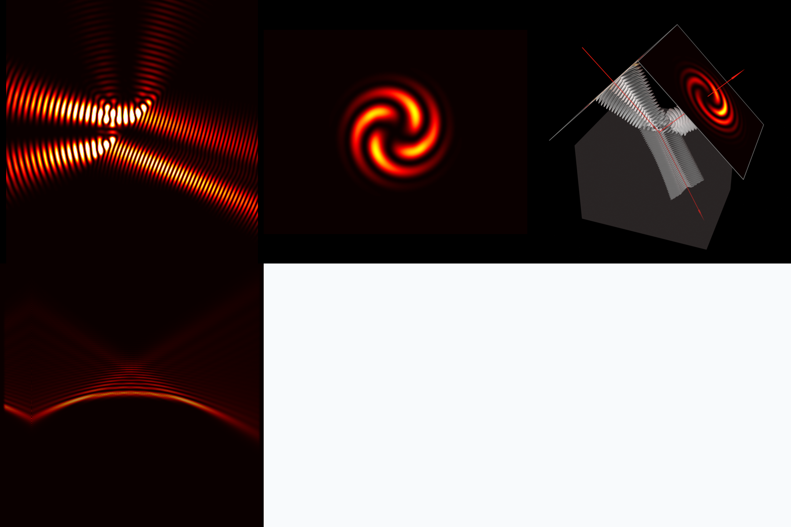
평면·오목·볼록 Gaussian, 3D vortex와 자유공간 Airy beam을 직접 계산하고 밝은 위상 무늬를 비교합니다.
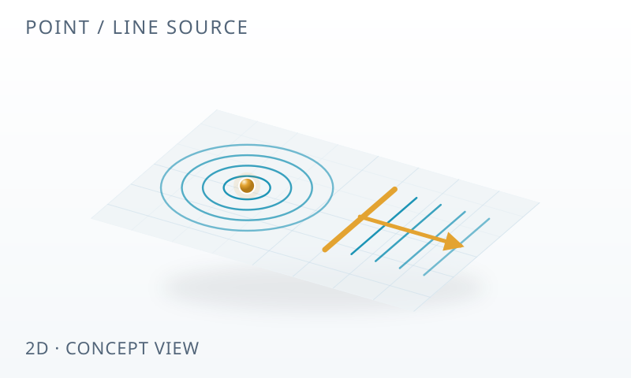
점 광원과 선 광원의 차이를 눈으로 확인하고, 빛이 나가는 방향을 측정합니다.
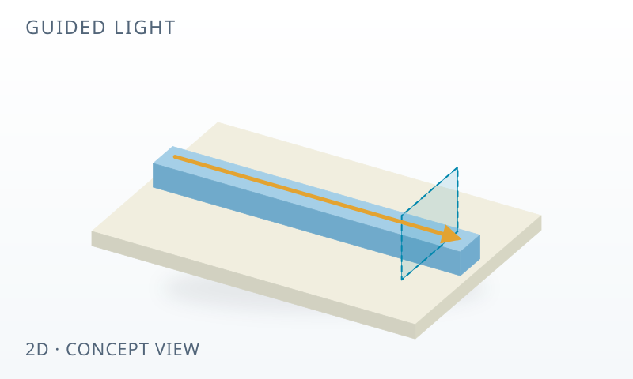
도파로에 빛이 갇히는 이유와 모드를 살펴보고, 투과율을 직접 확인합니다.
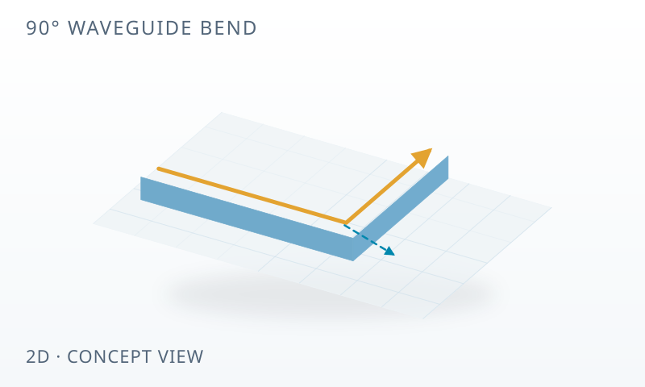
90° 굽힘에서 새는 빛을 재고, 반지름을 키우면 무엇이 달라지는지 비교합니다.
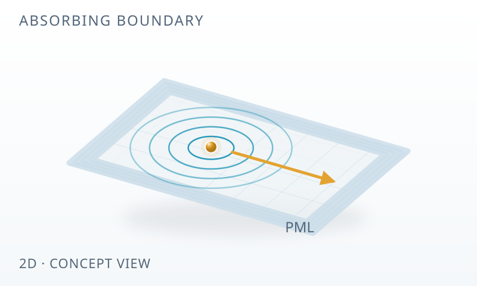
반사 경계, Absorber, PML을 같은 기준으로 비교해 가짜 반사를 구별합니다.
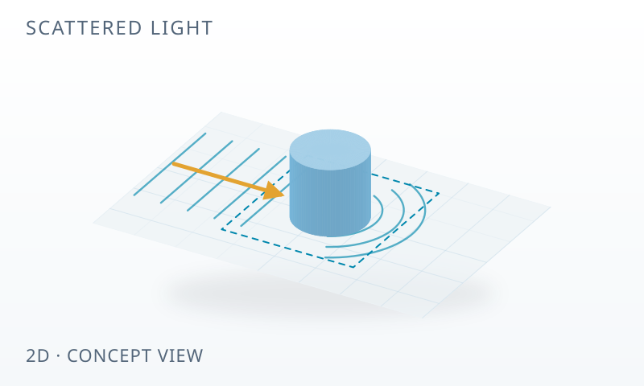
참조 계산을 빼서 입사장과 산란장을 나누고, 전력 수지를 맞춰 봅니다.
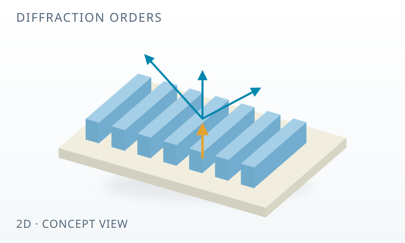
회절 차수마다 나가는 빛의 양과 격자의 폭이 만드는 위상 차이를 살펴봅니다.
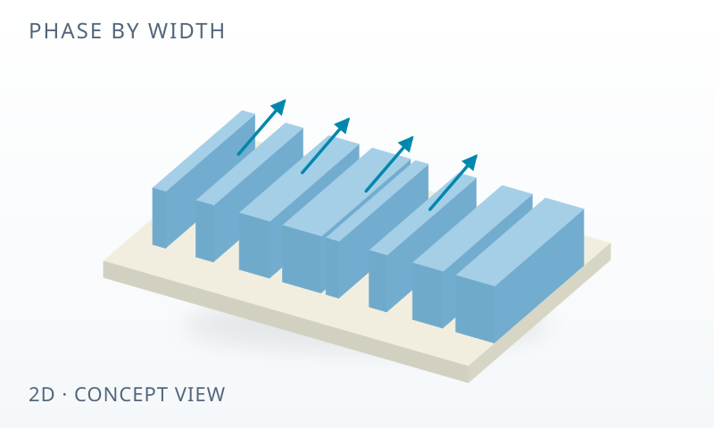
폭으로 위상을 조절하는 meta-atom을 모아, 빛을 원하는 방향으로 보냅니다.
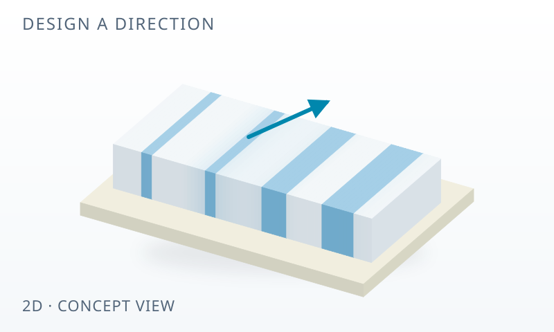
Forward, adjoint, gradient, 검증. 컴퓨터가 구조를 설계하는 네 단계를 따라갑니다.
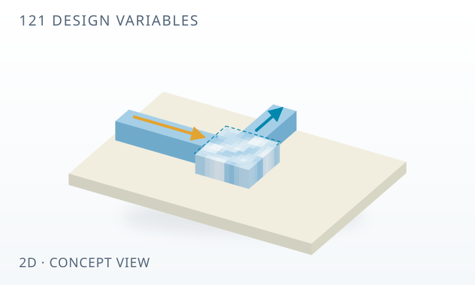
자유 설계 영역의 밀도를 바꾸며 출력을 높이고, 새 시뮬레이션으로 검증합니다.
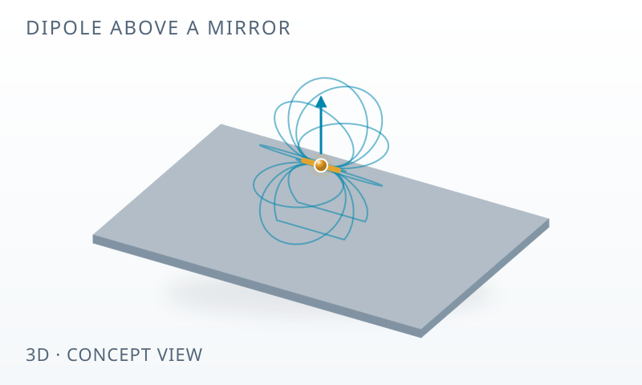
3차원 쌍극자의 방사 패턴과 PEC 거울이 만드는 변화를 알아봅니다.
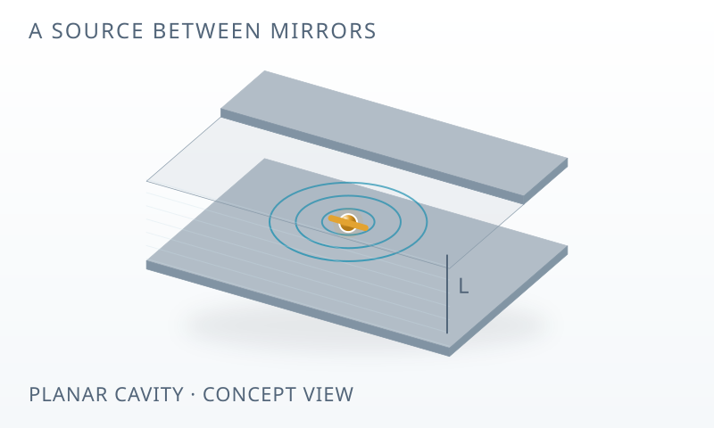
두 거울 사이 점광원의 LDOS를 재고, 방출량을 바꾸는 Purcell 인자를 알아봅니다.
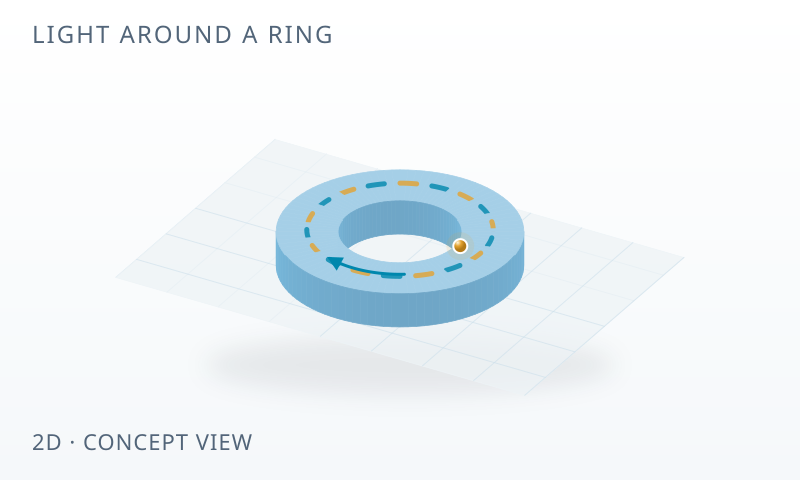
Harminv로 공진 주파수와 Q, FSR을 재고, 모드를 하나씩 그려 solve_cw와 맞춰 봅니다.
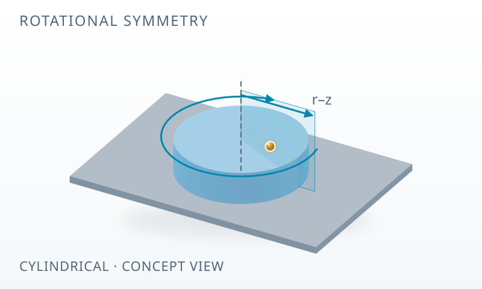
field를 exp(imφ)로 나눠 m마다 2D 계산 하나로 3D를 풀고, 축 밖 점광원을 m의 합으로 만듭니다.
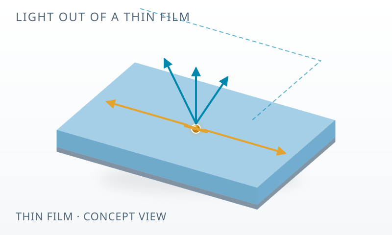
공기로 나간 flux를 source의 일로 나눠 추출 효율을 재고, CYL·3D·kz 적분이 같은 답을 주는지 봅니다.
다른 검색어를 입력하거나 전체 예제를 살펴보세요.
A SMALL FIELD GUIDE
용어를 열어 보고, 예제에서 확인하세요.
공간과 시간을 작은 격자로 나눠 전기장과 자기장을 번갈아 갱신하는 방법입니다. 파동이 시간에 따라 퍼지는 모습을 계산할 수 있습니다. 01편에서 시작하기 →
유한한 계산 공간의 가장자리에서 빛을 흡수하는 층입니다. 경계의 가짜 반사가 관심 영역으로 돌아오지 않도록 합니다. 02편에서 비교하기 →
도파로의 단면 구조에 맞는 전자기장 분포입니다. 어떤 모드를 넣고 측정하는지에 따라 투과율 해석이 달라집니다. 04편에서 확인하기 →
Forward와 adjoint 계산의 장을 후처리해 목적함수의 설계 변수에 대한 미분을 구합니다. 최적화기는 이 민감도를 이용해 다음 설계를 정합니다. 08편에서 원리 배우기 →
YOUR FIRST LIGHT PATH
각 글은 질문에서 출발해 예측하고, 실행하고, 검증하는 같은 흐름으로 이어집니다.
시즌 2는 점광원 하나를 따라간다. 빛을 가두면 방출 속도가 바뀌고(LED·OLED 효율), 상호작용 시간이 늘고(센서·변조기), 주파수가 골라진다(필터·레이저). 가둔 빛은 다시 꺼내야 하고(광추출), 꺼낸 빛은 보내야 한다(far field). 글마다 §1 끝에 그 편의 양이 들어가는 소자를 적어 두었다.
그다음은 시즌 2, 점광원의 여행위치마다 다른 위상을 칸 단위로 고르는 메타렌즈를 06~08편과 주제 정리 한 편으로 이어 읽습니다.